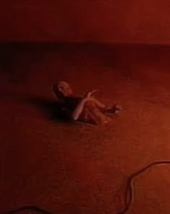

Glitch as Intentionality
Unearth Here.
In the technical celebration camp—the “demo culture”—a glitch is a failure. A morphing limb, a drifting shadow, a dream-logic transition: these are bugs to be patched out in the next model update.
Just as twentieth-century filmmakers embraced film grain, lens flares, and optical aberrations as expressive tools—reminders that we were watching cinema—AI filmmakers can embrace the shimmer of latent space.
These imperfections signal machine presence. They tell the viewer: this is not a recording; this is a synthesis.
Crawl Out Here.